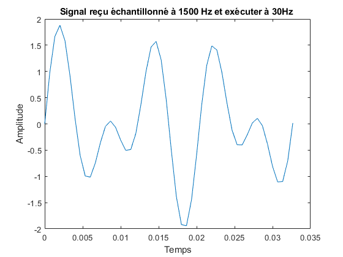

ilsDecoder.m (Version C)
Ce programme lit le fichier data.mat étant un échantillon de 50 points d'un signal modulé de 1500Hz à une fréquence de 30Hz. Le signal passe par un décodeur ILS et retourne en sortie trois fichiers *.txt contenant:
- ddm.txt: La DDM (Differential Depth of Modulation)
- deviation.txt: La déviation de l'avion
- flag: Le drapeau de validité
Un fichier data.mat est requis dans le même dossier.
Auteur : Nuno Silva-Pinto. Revu par: El Mahdi Erriq.
Compatible avec les versions Matlab 2017b et supérieur Date de création: 27 mars 2021. Modifié le: 4 avril 2021.
Contents
Clear all previous commands
clear all;
clc;
Interface d'entrée [LLR1] [LLR2]
signal = interfaceInput();
Interface du filtre 90Hz et 150Hz [LLR3] [LLR4]
amp90 = interfaceFiltre90Hz(signal); amp150 = interfaceFiltre150Hz(signal);
Interface DDM [LLR5] [LLR6]
[deviation,ddm] = interfaceDDM(amp90, amp150);
Interface du drapeau de validité [LLR8]
flag = interfaceFlag(amp90, amp150);
Affichage [LLR7] [LLR9]
disp(['ddm: ', num2str(ddm)]); dispDeviation = strcat("deviation: ",deviation); disp(dispDeviation); disp(['flag: ', num2str(flag)]);
ddm: -0.0137 deviation: centré flag: 0